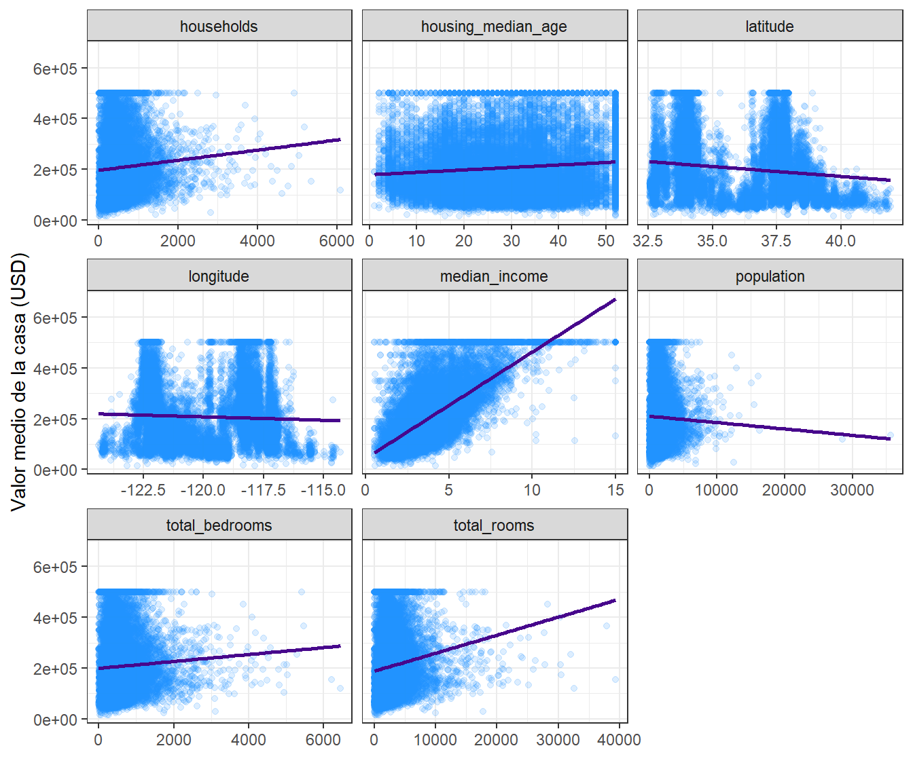
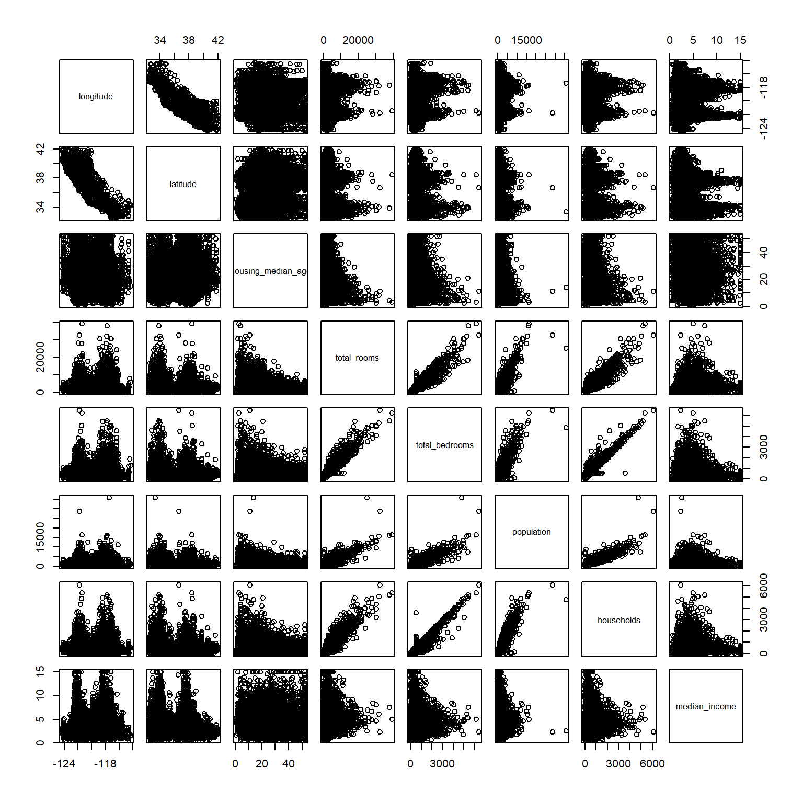
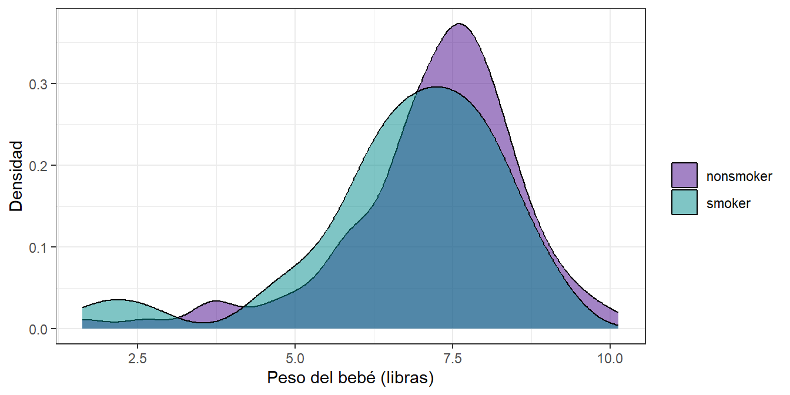
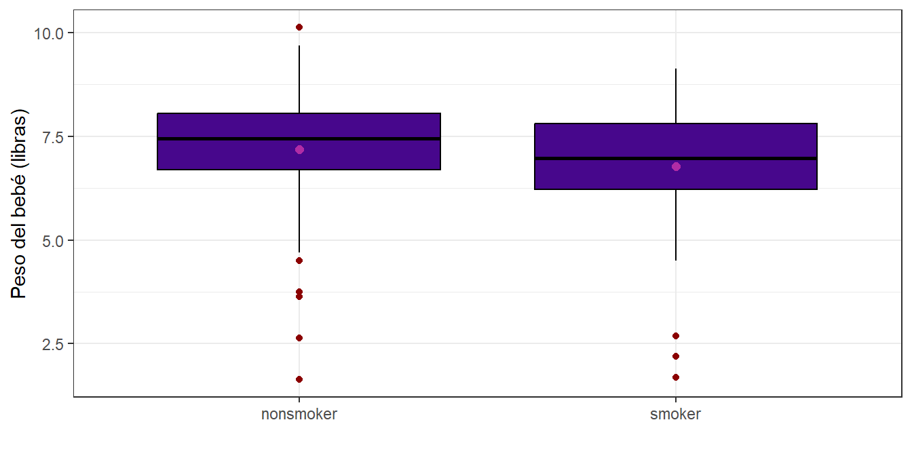
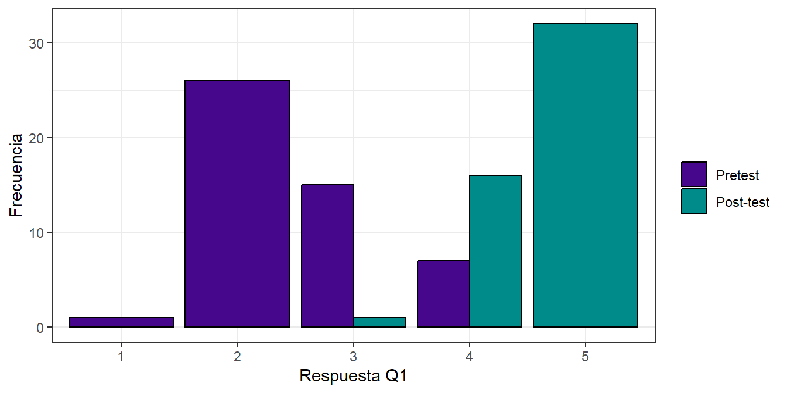

Asignaciones
Este capítulo reúne los catorce ejercicios que asignó el profesor, cada uno con su enunciado y su solución completa. Son los mismos que están en los capítulos 1 y 2, acá quedan juntos y en orden para repasarlos de corrido. Debajo de cada enunciado hay un enlace a la sección donde se trabajó, por si hace falta el contexto de alrededor.
El código se vuelve a ejecutar acá, así que las tablas y los gráficos son los mismos. Cada conjunto de datos se carga dentro del primer ejercicio que lo usa, de modo que el capítulo funciona por sí solo.
Los paquetes que se usan a lo largo del capítulo:
library(tidyverse)
library(moments)
library(GGally)
library(readxl)
library(effsize)
library(nortest)
library(car)
library(rstatix)
library(openintro)Ejercicio 1.1. Gráficas e interpretación de las variables características
Enunciado. Realizar las gráficas de las otras variables, además la interpretación de la tabla y el gráfico quedan como ejercicio.
Sección 3.4.4 del libro del profesor
Solución. Los datos son los precios de vivienda de California, con los 207 faltantes de
total_bedrooms imputados por la media y ocean_proximity convertida a factor:
data <- read.csv("Datos/housing.csv")
data %>%
mutate(across(
where(is.numeric),
~ ifelse(is.na(.), mean(., na.rm = TRUE), .)
)) -> df
df$ocean_proximity <- factor(df$ocean_proximity)La tabla que hay que interpretar es la del resumen de las variables características:
df %>%
select(where(is.numeric), -median_house_value) %>%
pivot_longer(
cols = everything(),
names_to = "variable",
values_to = "valor"
) %>%
group_by(variable) %>%
summarise(n = length(valor),
media = mean(valor),
sd = sd(valor),
mediana = median(valor),
RIC = IQR(valor),
Q1 = quantile(valor, 0.25),
Q3 = quantile(valor, 0.75),
minimo = min(valor),
maximo = max(valor),
asimetria = skewness(valor),
curtosis = kurtosis(valor))## # A tibble: 8 × 12
## variable n media sd mediana RIC Q1 Q3 minimo maximo
## <chr> <int> <dbl> <dbl> <dbl> <dbl> <dbl> <dbl> <dbl> <dbl>
## 1 househol… 20640 500. 3.82e2 409 3.25e2 280 605 1 6082
## 2 housing_… 20640 28.6 1.26e1 29 1.9 e1 18 37 1 52
## 3 latitude 20640 35.6 2.14e0 34.3 3.78e0 33.9 37.7 32.5 42.0
## 4 longitude 20640 -120. 2.00e0 -118. 3.79e0 -122. -118. -124. -114.
## 5 median_i… 20640 3.87 1.90e0 3.53 2.18e0 2.56 4.74 0.500 15.0
## 6 populati… 20640 1425. 1.13e3 1166 9.38e2 787 1725 3 35682
## 7 total_be… 20640 538. 4.19e2 438 3.46e2 297 643. 1 6445
## 8 total_ro… 20640 2636. 2.18e3 2127 1.70e3 1448. 3148 2 39320
## # ℹ 2 more variables: asimetria <dbl>, curtosis <dbl>Para la interpretacion de las tablas se realizaz un proceso de agrupacion de las ocho variables dejandolas en tres conjuntos según lo que dicen la asimetría, la curtosis y lo que mide la variable.
El primer grupo son las variables de conteo: total_rooms, total_bedrooms,
population y households. Todas tienen media por encima de la mediana, tambien una asimetría
entre 3,4 y 4,9 y curtosis entre 25 y 76. Son distribuciones muy sesgadas a la derecha. population es el caso extremo: la mediana es 1.166 habitantes
pero el máximo llega a 35.682, y la curtosis de 76,5 afirmado que el maximo no es caso aislado.
El segundo es median_income y housing_median_age, que son variables que ya representan una medida de tendencia central. El ingreso tiene asimetría 1,65 y curtosis 7,95, o sea sesgo a la derecha pero
mucho más suave que el grupo anterior.
housing_median_age es la más simétrica de todas, con asimetría 0,06 y curtosis 2,2.
El tercero es el par de coordenadas, latitude y longitude. Aquí la asimetría y el
curtosis no significan mucho porque no son magnitudes, son posiciones en el
mapa. La curtosis por debajo de 3 en ambas refleja que California es alargada.
Ahora vamos a ver las cajas de las variables características. Como están en escalas muy
distintas, no sirve ponerlas en un mismo eje, así que van con facet_wrap y escala libre para una mejor visualización
df %>%
select(where(is.numeric), -median_house_value, -latitude, -longitude) %>%
pivot_longer(cols = everything(),
names_to = "variable",
values_to = "valor") %>%
ggplot(aes(x = "", y = valor)) +
geom_boxplot(fill = "#47078c", color = "black",
outlier.color = "darkred", outlier.alpha = 0.3) +
stat_summary(fun = mean, geom = "point", shape = 20,
size = 3, color = "#b02ca5") +
facet_wrap(~ variable, scales = "free_y", ncol = 3) +
labs(x = "", y = "") +
theme_bw()
Y los histogramas de las mismas variables:
df %>%
select(where(is.numeric), -median_house_value, -latitude, -longitude) %>%
pivot_longer(cols = everything(),
names_to = "variable",
values_to = "valor") %>%
ggplot(aes(x = valor)) +
geom_histogram(bins = 40, fill = "#008B8B", color = "white", alpha = 0.8) +
facet_wrap(~ variable, scales = "free", ncol = 3) +
labs(x = "", y = "Frecuencia") +
theme_bw()
La interpretacion grafica de los cuatro conteos muestran la misma figura: caja
aplastada contra el eje y una larga linea de puntos rojos hacia arriba. Eso es exactamente
lo que anunciaban la asimetría y la curtosis de la tabla. En median_income la caja ya se
ve más centrada, pero se alcanza a ver como en 15 hay una gran aglomeracion de datos lo que puede indicar otro limite artificial. housing_median_age es
la única cuya caja queda alrededor de la mitad del rango y casi sin puntos fuera, mientras que en el histograma podemos ver como hay una barra anomala en el 52 indicanco igual que con median_income que hay un limite.
Ahora la única variable categórica del conjunto.
df %>%
count(ocean_proximity, name = "n") %>%
mutate(Porcentaje = round((n / sum(n)) * 100, 2),
Variable = "Ocean_proximity",
Categoria = as.character(ocean_proximity)) %>%
select(Variable, Categoria, n, Porcentaje) -> tabla_ocean
tabla_ocean## Variable Categoria n Porcentaje
## 1 Ocean_proximity <1H OCEAN 9136 44.26
## 2 Ocean_proximity INLAND 6551 31.74
## 3 Ocean_proximity ISLAND 5 0.02
## 4 Ocean_proximity NEAR BAY 2290 11.09
## 5 Ocean_proximity NEAR OCEAN 2658 12.88tabla_ocean_b <- df %>%
count(ocean_proximity, name = "n") %>%
mutate(Porcentaje = round((n / sum(n)) * 100, 1),
Etiqueta = paste0(n, " (", Porcentaje, "%)"))
tabla_ocean_b %>%
ggplot(aes(x = ocean_proximity, y = n)) +
geom_col(fill = "#008B8B", width = 0.6) +
geom_text(aes(label = Etiqueta), vjust = -0.5, size = 4.5) +
scale_y_continuous(expand = expansion(mult = c(0, 0.15))) +
labs(title = "Distribución de la variable ocean proximity",
x = "ocean_proximity", y = "n") +
theme_bw()
Casi la mitad de las casa (44,26%) están a menos de una hora del océano y un tercio
(31,74%) son interior. La categoría ISLAND tiene apenas 5 registros, el 0,02%,
así que cualquier promedio que se calcule ahí no es significativo.
Ejercicio 1.2. Diagramas de dispersión con las demás variables
Enunciado. Realiza los diagramas de dispersión de la variable median_house_value con respecto a las variables independientes que hacen falta. Analiza e interpreta la relación observada entre estas variables, indicando si existe una tendencia lineal, la presencia de valores atípicos y el grado de asociación con la variable objetivo.
Sección 3.4.5 del libro del profesor
Solución.
df %>%
select(where(is.numeric)) %>%
pivot_longer(cols = -median_house_value,
names_to = "variable",
values_to = "valor") %>%
ggplot(aes(x = valor, y = median_house_value)) +
geom_point(alpha = 0.15, color = "#1E90FF") +
geom_smooth(method = "lm", se = FALSE, color = "#47078c") +
facet_wrap(~ variable, scales = "free_x", ncol = 3) +
labs(x = "", y = "Valor medio de la casa (USD)") +
theme_bw()## `geom_smooth()` using formula = 'y ~ x'
Y el coeficiente de correlación de cada una con el precio, para ponerle número a lo que se ve:
df %>%
select(where(is.numeric)) %>%
summarise(across(-median_house_value,
~ cor(.x, median_house_value))) %>%
pivot_longer(everything(), names_to = "variable", values_to = "correlacion") %>%
arrange(desc(abs(correlacion)))## # A tibble: 8 × 2
## variable correlacion
## <chr> <dbl>
## 1 median_income 0.688
## 2 latitude -0.144
## 3 total_rooms 0.134
## 4 housing_median_age 0.106
## 5 households 0.0658
## 6 total_bedrooms 0.0495
## 7 longitude -0.0460
## 8 population -0.0246median_income es la única con una relación fuerte, r = 0,688, mientras que las demas quedan por
debajo de 0,15 en valor absoluto, o sea que por sí mismas casi no explican median_house_value. Los
cuatro conteos (definidos en seccion 1.2.1) forman nubes pegadas al eje izquierdo porque están muy sesgados, y ahí la
correlación de Pearson no es una buena medida de la relación por ello seria mejor trabajar con Spearman ya qye trabaja con el orden de los datos no con sus valores. latitude da −0,144 y esa
correlación no tiene significancia
En cuanto a los valores atipicos, la línea horizontal de puntos en 500.001 atraviesa todos los gráficos. No son atípicos:
es el truncamiento del target que ya vimos. Lo mismo pasa con
la barra vertical en 15 del panel de median_income. Los dos son artefactos que reflejan un limite artificial en median_income y median_house_value.
Los cuatro conteos sí tienen atípicos de verdad. En cada uno se ven unos pocos puntos
disparados hacia la derecha, muy lejos de la nube principal: population llega a 35.682 y
total_rooms a 39.320. Estos son valores legítimos y no habría que quitarlos, porque
corresponden a registros que realmete son mucho más grandes que el resto.
Ahora comparemos el valor medio de la vivienda segun la aproximidad al oceano
df %>%
group_by(ocean_proximity) %>%
summarise(n = length(median_house_value),
media = mean(median_house_value),
sd = sd(median_house_value),
mediana = median(median_house_value),
RIC = IQR(median_house_value),
Q1 = quantile(median_house_value, 0.25),
Q3 = quantile(median_house_value, 0.75),
minimo = min(median_house_value),
maximo = max(median_house_value),
asimetria = skewness(median_house_value),
curtosis = kurtosis(median_house_value))## # A tibble: 5 × 12
## ocean_proximity n media sd mediana RIC Q1 Q3 minimo maximo
## <fct> <int> <dbl> <dbl> <dbl> <dbl> <dbl> <dbl> <dbl> <dbl>
## 1 <1H OCEAN 9136 2.40e5 1.06e5 214850 125000 164100 289100 17500 500001
## 2 INLAND 6551 1.25e5 7.00e4 108500 71450 77500 148950 14999 500001
## 3 ISLAND 5 3.80e5 8.06e4 414700 150000 300000 450000 287500 450000
## 4 NEAR BAY 2290 2.59e5 1.23e5 233800 183200 162500 345700 22500 500001
## 5 NEAR OCEAN 2658 2.49e5 1.22e5 229450 172750 150000 322750 22500 500001
## # ℹ 2 more variables: asimetria <dbl>, curtosis <dbl>Veamos un grafico de caja y bigotes
df %>%
ggplot(aes(x = ocean_proximity, y = median_house_value)) +
geom_boxplot(fill = "#47078c", color = "black",
outlier.color = "darkred", outlier.alpha = 0.3) +
stat_summary(fun = mean, geom = "point", shape = 20,
size = 3, color = "#b02ca5") +
labs(x = "Proximidad al oceano", y = "Valor medio de la casa (USD)") +
theme_bw()
INLAND es el grupo claramente más barato, con mediana de 108.500 frente a 214.850 de
<1H OCEAN y 233.800 de NEAR BAY. Los tres grupos costeros (<1H OCEAN, NEAR BAY y NEAR OCEAN) se parecen bastante entre
sí. ISLAND aparece con la media más alta de todas, 380.440, pero son 5 viviendas, así que
esa caja no se puede comparar con las otras.
Ejercicio 1.3. Dispersión entre las variables independientes
Enunciado. Realiza el gráfico de dispersión de las variables independientes numéricas y su interpretación.
Sección 3.4.5 del libro del profesor
Solución. A diferencia del ejercicio anterior, aquí no se cruzan las variables contra el target sino entre ellas mismas.

Lo que salta a la vista es un bloque de cuatro paneles casi rectos, arriba a la derecha:
total_rooms, total_bedrooms, population y households se relacionan entre sí de forma
casi perfecta. Sus correlaciones van de 0,857 a 0,975, siendo la más alta la de
total_bedrooms con households.Esto tiene sentido, porque las cuatro miden en el fondo lo
mismo: qué tan grande es el registro. Donde hay más hogares hay más cuartos, más
habitaciones y más gente.
Eso se llama colinealidad, y es un hallazgo que importa: esas cuatro variables aportan información repetida. Si más adelante alguien quisiera construir un modelo para predecir el precio, meterlas todas juntas sería redundante.
median_income es el caso opuesto. Su correlación con las demás no pasa de 0,198 y con
varias es prácticamente cero. O sea que aporta información que ninguna otra trae, y eso la
vuelve la más valiosa del conjunto: ya sabíamos que es la única con relación fuerte con el
precio, y ahora sabemos además que esa información no está duplicada.
housing_median_age tiene correlaciones negativas moderadas con los cuatro conteos, entre
−0,296 y −0,361. Esto nos puede llevar a que las casa con construcciones más antiguas tienden a ser
más pequeñas.
Y por ultimo queda: longitude contra latitude da −0,925, la segunda correlación
más alta de toda la matriz. Pero no describe ninguna relación entre variables, describe la
forma de California, que se extiende en diagonal de noroeste a sureste.
Ejercicio 1.4. Errores del gráfico de ggpairs
Enunciado. Menciona los errores que puedes encontrar en el gráfico.
Sección 3.4.5 del libro del profesor
Solución. El gráfico en cuestión es este:

El primero es de legibilidad. Con el df completo, ggpairs() arma un recuadro de 10×10 con
20.640 puntos en cada panel; los ejes quedan ilegibles, las etiquetas se sobreponen y el
gráfico tarda mucho tiempo en mostrarse. Para que realmete tenga una buena utilidad habria que seleccionar menos variables.
El segundo es que mete longitude y latitude como si fueran variables cuantitativas
cualquiera. Calcula su media, su densidad y su correlación con el precio, y ninguna de
esas tres cosas significa algo. Esas dos variables se deberían ver en un mapa.
El tercero es que las correlaciones que reporta son de Pearson, que supone relación lineal
y es muy sensible a los valores extremos y como tenemos variables tan sesgadas como population o
total_rooms ese número subestimara la asociación real por lo cual para este caso serviría más Spearman.
El cuarto es que el truncamiento de median_house_value en 500.001 contamina toda la fila
y toda la columna del target: la densidad muestra un pico falso al final y las nubes de
puntos muestran una línea horizontal que no es un patrón realista.
Y el quinto es que ggpairs() ignora ocean_proximity si no se incluye. Como ya vimos que
ese factor influye fuertemente en los precios, mirar solo las relaciones numéricas deja por fuera la
variable que más ordena el conjunto.
Ejercicio 2.1. Análisis exploratorio de los datos de presión
Enunciado. Realiza el análisis exploratorio del conjunto de datos.
Sección 4.1 del libro del profesor
Solución. Los datos vienen en formato largo: una columna dice de qué presión se trata y la otra trae el valor. Para las pruebas que reciben dos vectores hay que separarlos.
df <- read_excel("Datos/datos_medicos.xlsx")
df$Presion <- factor(df$Presion)
dfs <- df %>%
filter(Presion == "PresionSistolica") %>%
pull(Valores)
dfd <- df %>%
filter(Presion == "PresionDiastolica") %>%
pull(Valores)df %>%
group_by(Presion) %>%
summarise(n = length(Valores),
prom = mean(Valores),
ds = sd(Valores),
varianza = var(Valores),
mediana = median(Valores),
RIC = IQR(Valores),
min = min(Valores),
max = max(Valores),
asimetria = skewness(Valores),
curtosis = kurtosis(Valores))## # A tibble: 2 × 11
## Presion n prom ds varianza mediana RIC min max asimetria
## <fct> <int> <dbl> <dbl> <dbl> <dbl> <dbl> <dbl> <dbl> <dbl>
## 1 PresionDiastol… 100 78.9 9.48 89.8 77.8 12.4 59.9 112. 0.639
## 2 PresionSistoli… 100 121. 9.13 83.3 121. 11.9 96.9 142. 0.0605
## # ℹ 1 more variable: curtosis <dbl>df %>%
ggplot(aes(x = Valores, fill = Presion)) +
geom_density(alpha = 0.5, color = "black") +
scale_fill_manual(values = c("#47078c", "#008B8B")) +
labs(x = "Presión", y = "Densidad") +
theme_bw()
df %>%
ggplot(aes(x = Presion, y = Valores)) +
geom_boxplot(fill = "#47078c", color = "black", outlier.color = "darkred") +
stat_summary(fun = mean, geom = "point", shape = 20, size = 3, color = "#b02ca5") +
labs(x = "", y = "Presión") +
theme_bw()
Son dos grupos de 100 mediciones cada uno. La sistólica promedia 120,90 y la diastólica 78,95, o sea unos 42 mmHg de diferencia, que es un valor grandísimo comparado con la dispersión de cada grupo (9,13 y 9,48). En los dos grupos la media y la mediana casi coinciden, la asimetría está cerca de cero y la curtosis cerca de 3, que es esperada dado los datos normales. Las cajas quedan claramente separadas, así que la prueba formal debería confirmar lo que ya se ve.
Ejercicio 2.2. Verificación de var.test con el teorema de razón de varianzas
Enunciado. Usando el teorema de razón de varianzas verifica la salida de la función var.test con los datos de presión arterial.
Sección 4.1 del libro del profesor
Solución. Primero se obtiene la salida de R, que es la que hay que reproducir a mano:
##
## F test to compare two variances
##
## data: dfs and dfd
## F = 0.92784, num df = 99, denom df = 99, p-value = 0.7102
## alternative hypothesis: true ratio of variances is not equal to 1
## 95 percent confidence interval:
## 0.6242897 1.3789878
## sample estimates:
## ratio of variances
## 0.9278405El teorema dice que si dos muestras independientes vienen de poblaciones normales, el cociente de las varianzas muestrales sigue una distribución F:
\[F = \frac{S_1^2}{S_2^2} \sim F_{n_1-1,\; n_2-1}\]
con hipótesis
\[H_0: \sigma_1^2 = \sigma_2^2 \qquad \text{vs} \qquad H_1: \sigma_1^2 \neq \sigma_2^2\]
Como la prueba es de dos colas, se rechaza si \(F < F_{\alpha/2}\) o si \(F > F_{1-\alpha/2}\).
n1 <- length(dfs); n2 <- length(dfd)
s1_2 <- var(dfs); s2_2 <- var(dfd)
F_calc <- s1_2 / s2_2
gl1 <- n1 - 1
gl2 <- n2 - 1
F_inf <- qf(0.025, gl1, gl2)
F_sup <- qf(0.975, gl1, gl2)
p_val <- 2 * min(pf(F_calc, gl1, gl2), pf(F_calc, gl1, gl2, lower.tail = FALSE))
IC_inf <- F_calc / F_sup
IC_sup <- F_calc / F_inf
tibble(s1_2, s2_2, F_calc, gl1, gl2, F_inf, F_sup, p_val, IC_inf, IC_sup)## # A tibble: 1 × 10
## s1_2 s2_2 F_calc gl1 gl2 F_inf F_sup p_val IC_inf IC_sup
## <dbl> <dbl> <dbl> <dbl> <dbl> <dbl> <dbl> <dbl> <dbl> <dbl>
## 1 83.3 89.8 0.928 99 99 0.673 1.49 0.710 0.624 1.38El F calculado a mano da 0,92784, con 99 y 99 grados de libertad, y el p-valor 0,7102.
Son exactamente los mismos números que da var.test. Como F cae entre 0,6728 y
1,4862, que son los valores críticos al 5%, no se rechaza H0. Además el intervalo de
confianza de la razón, [0,6243 ; 1,3790], contiene el 1, que nos lleva a que no hay evidencia de que las varianzas sean distintas.
Ejercicio 2.3. Teorema de la diferencia de medias
Enunciado. Usando el teorema de la diferencia de medias verifica la salida de la función t.test con los datos de presión arterial.
- Aplica el teorema de diferencia de medias con la distribución normal.
Sección 4.1 del libro del profesor
Solución. Con normalidad e igualdad de varianzas se puede aplicar el t-test clásico, que es la salida a reproducir:
##
## Two Sample t-test
##
## data: dfs and dfd
## t = 31.888, df = 198, p-value < 2.2e-16
## alternative hypothesis: true difference in means is not equal to 0
## 95 percent confidence interval:
## 39.36328 44.55275
## sample estimates:
## mean of x mean of y
## 120.90406 78.94604El teorema del t de Student con varianzas iguales usa la varianza combinada:
\[t = \frac{\bar{X}_1 - \bar{X}_2}{S_p \sqrt{\frac{1}{n_1} + \frac{1}{n_2}}} \qquad S_p = \sqrt{\frac{(n_1-1)S_1^2 + (n_2-1)S_2^2}{n_1 + n_2 - 2}} \qquad gl = n_1 + n_2 - 2\]
Cuando las muestras son grandes, la t se aproxima a la normal estándar y el estadístico se puede escribir directamente como
\[Z = \frac{\bar{X}_1 - \bar{X}_2}{\sqrt{\frac{S_1^2}{n_1} + \frac{S_2^2}{n_2}}}\]
Se hacen los dos y se comparan.
m1 <- mean(dfs); m2 <- mean(dfd)
Sp_2 <- ((n1 - 1) * s1_2 + (n2 - 1) * s2_2) / (n1 + n2 - 2)
Sp <- sqrt(Sp_2)
ee_t <- Sp * sqrt(1/n1 + 1/n2)
t_calc <- (m1 - m2) / ee_t
gl <- n1 + n2 - 2
ee_z <- sqrt(s1_2/n1 + s2_2/n2)
z_calc <- (m1 - m2) / ee_z
IC_inf <- (m1 - m2) - qt(0.975, gl) * ee_t
IC_sup <- (m1 - m2) + qt(0.975, gl) * ee_t
tibble(dif = m1 - m2,
Sp_2, Sp, ee_t, t_calc, gl,
t_critico = qt(0.975, gl),
p_t = 2 * pt(abs(t_calc), gl, lower.tail = FALSE),
ee_z, z_calc,
z_critico = qnorm(0.975),
p_z = 2 * pnorm(abs(z_calc), lower.tail = FALSE),
IC_inf,IC_sup)## # A tibble: 1 × 14
## dif Sp_2 Sp ee_t t_calc gl t_critico p_t ee_z z_calc z_critico
## <dbl> <dbl> <dbl> <dbl> <dbl> <dbl> <dbl> <dbl> <dbl> <dbl> <dbl>
## 1 42.0 86.6 9.30 1.32 31.9 198 1.97 6.20e-80 1.32 31.9 1.96
## # ℹ 3 more variables: p_z <dbl>, IC_inf <dbl>, IC_sup <dbl>La varianza combinada da 86,563 y el error estándar de la diferencia 1,3158, con lo que el
t manual queda en 31,888 con 198 grados de libertad, idéntico a la salida de t.test. El
valor crítico al 5% es 1,972, y como \(|31,888| > 1,972\) se rechaza H0.
Por la forma normal el estadístico da 31,890, prácticamente el mismo número. Esto pasa porque las dos varianzas son casi iguales y porque con 198 grados de libertad la t ya es indistinguible de la normal: el crítico de la t es 1,9720 y el de la normal 1,9600. La diferencia entre los dos caminos solo se nota cuando la muestra es pequeña.
La conclusión sustantiva: la presión sistólica promedio es 41,96 mayor que la diastólica, con intervalo de confianza al 95% de [39,36 ; 44,55]. El intervalo no contiene el cero, así que la diferencia es significativa.
Ejercicio 2.4. Análisis exploratorio de los precios
Enunciado. Realiza el análisis exploratorio del conjunto de datos.
Sección 4.1 del libro del profesor
Solución. Los datos son los precios por tipo de cuenta, separados también en dos vectores:
df <- read_excel("Datos/datos_economia.xlsx")
df$`Tipo de cuenta` <- factor(df$`Tipo de cuenta`)
dfi <- df %>%
filter(`Tipo de cuenta` == "Inversion") %>%
pull(Precio)
dfg <- df %>%
filter(`Tipo de cuenta` == "Ganancia") %>%
pull(Precio)df %>%
group_by(`Tipo de cuenta`) %>%
summarise(n = length(Precio),
prom = mean(Precio),
ds = sd(Precio),
varianza = var(Precio),
mediana = median(Precio),
RIC = IQR(Precio),
min = min(Precio),
max = max(Precio),
CV = sd(Precio) / mean(Precio))## # A tibble: 2 × 10
## `Tipo de cuenta` n prom ds varianza mediana RIC min max
## <fct> <int> <dbl> <dbl> <dbl> <dbl> <dbl> <dbl> <dbl>
## 1 Ganancia 100 778491. 193397. 3.74e10 7.55e5 2.54e5 3.89e5 1.45e6
## 2 Inversion 100 5090406. 912816. 8.33e11 5.06e6 1.19e6 2.69e6 7.19e6
## # ℹ 1 more variable: CV <dbl>df %>%
ggplot(aes(x = `Tipo de cuenta`, y = Precio)) +
geom_boxplot(fill = "#47078c", color = "black", outlier.color = "darkred") +
stat_summary(fun = mean, geom = "point", shape = 20, size = 3, color = "#b02ca5") +
scale_y_continuous(labels = scales::comma) +
labs(x = "", y = "Precio") +
theme_bw()
En este ejercicio la historia es distinta a la de la presión, las cuentas de inversión promedian 5.090.406 y las de ganancia 778.491. Pero lo que salta a la vista es la dispersión: la desviación estándar de inversión es 912.816 y la de ganancia 193.397, casi cinco veces menor. El coeficiente de variación, en cambio, es practicamente el mismo en los dos grupos (alrededor de 0,18 y 0,25), lo que sugiere que la dispersión crece proporcional a la magnitud. Con varianzas tan distintas, el t-test clásico no aplica.
Ejercicio 2.5. Bartlett, Levene y Fligner-Killeen
Enunciado. Aplica las pruebas de Bartlett, Levene y Fligner-Killeen, explica detalladamente cada prueba y cuál distribución usa y después interpreta el resultado.
Sección 4.1 del libro del profesor
Solución. Las tres prueban lo mismo, \(H_0: \sigma_1^2 = \sigma_2^2\), pero por caminos distintos.
##
## Bartlett test of homogeneity of variances
##
## data: Precio by Tipo de cuenta
## Bartlett's K-squared = 177.81, df = 1, p-value < 2.2e-16## Levene's Test for Homogeneity of Variance (center = median)
## Df F value Pr(>F)
## group 1 107.2 < 2.2e-16 ***
## 198
## ---
## Signif. codes: 0 '***' 0.001 '**' 0.01 '*' 0.05 '.' 0.1 ' ' 1##
## Fligner-Killeen test of homogeneity of variances
##
## data: Precio by Tipo de cuenta
## Fligner-Killeen:med chi-squared = 82.798, df = 1, p-value < 2.2e-16##
## F test to compare two variances
##
## data: dfi and dfg
## F = 22.277, num df = 99, denom df = 99, p-value < 2.2e-16
## alternative hypothesis: true ratio of variances is not equal to 1
## 95 percent confidence interval:
## 14.9892 33.1095
## sample estimates:
## ratio of variances
## 22.27745Bartlett compara las varianzas mediante un estadístico basado en el logaritmo de las varianzas de cada grupo, que bajo H0 se distribuye ji-cuadrado con k − 1 grados de libertad, o sea 1 en este caso porque son dos grupos. Es el más potente de los tres cuando los datos sí son normales, pero también el más frágil: si hay colas pesadas o asimetría, rechaza aunque las varianzas sean iguales. Aquí da K² = 177,81 con 1 grado de libertad y p < 2,2e-16.
Levene no trabaja con las varianzas sino con las distancias de cada dato al centro de su
grupo. Convierte cada observación en \(|x_{ij} - \tilde{x}_i|\) y le corre un ANOVA a esas
distancias: si un grupo está más disperso, sus distancias promedio serán mayores. Como el
contraste es un ANOVA, su estadístico se distribuye F con k − 1 y n − k grados de
libertad, aquí 1 y 198. Usar la mediana como centro (center = median) en vez de la media
es lo que lo vuelve robusto a los valores extremos. Aquí da F = 107,2 con p < 2,2e-16.
Fligner-Killeen va un paso más allá y trabaja con los rangos de esas distancias en lugar de con las distancias mismas. Al pasar a rangos deja de importar la forma de la distribución, así que es el más robusto de los tres y el recomendado cuando hay dudas serias sobre la normalidad. Su estadístico también se distribuye ji-cuadrado con k − 1 grados de libertad. Aquí da ji-cuadrado = 82,798 con 1 grado de libertad y p < 2,2e-16.
Las tres coinciden en rechazar H0, y var.test lo confirma: la razón de varianzas es
22,28 con intervalo [14,99 ; 33,11], que ni de cerca contiene el 1. Que los tres métodos
coincidan es la situación cómoda; cuando se contradicen, la regla práctica es hacerle caso
a Levene o a Fligner, porque Bartlett suele estar rechazando por falta de normalidad y no
por diferencia real de varianzas.
Ejercicio 2.6. Análisis exploratorio de los tiempos
Enunciado. Realiza el análisis exploratorio del conjunto de datos.
Sección 4.2 del libro del profesor
Solución. Son diez estudiantes medidos antes y después de una intervención educativa:
datos <- data.frame(
estudiante = c(1:10),
antes = c(12.9, 13.5, 12.8, 15.6, 17.2, 19.2, 12.6, 15.3, 14.4, 11.3),
despues = c(12.7, 13.6, 12.0, 15.2, 16.8, 20.0, 12.0, 15.9, 16.0, 11.1)
)## estudiante antes despues diferencia
## 1 1 12.9 12.7 -0.2
## 2 2 13.5 13.6 0.1
## 3 3 12.8 12.0 -0.8
## 4 4 15.6 15.2 -0.4
## 5 5 17.2 16.8 -0.4
## 6 6 19.2 20.0 0.8
## 7 7 12.6 12.0 -0.6
## 8 8 15.3 15.9 0.6
## 9 9 14.4 16.0 1.6
## 10 10 11.3 11.1 -0.2datos %>%
pivot_longer(cols = c(antes, despues, diferencia),
names_to = "momento", values_to = "tiempo") %>%
group_by(momento) %>%
summarise(n = length(tiempo),
prom = mean(tiempo),
ds = sd(tiempo),
mediana = median(tiempo),
RIC = IQR(tiempo),
min = min(tiempo),
max = max(tiempo))## # A tibble: 3 × 8
## momento n prom ds mediana RIC min max
## <chr> <int> <dbl> <dbl> <dbl> <dbl> <dbl> <dbl>
## 1 antes 10 14.5 2.39 14.0 2.70 11.3 19.2
## 2 despues 10 14.5 2.76 14.4 3.8 11.1 20
## 3 diferencia 10 0.0500 0.741 -0.200 0.875 -0.800 1.6datos %>%
pivot_longer(cols = c(antes, despues),
names_to = "momento", values_to = "tiempo") %>%
mutate(momento = fct_relevel(momento, "antes", "despues")) %>%
ggplot(aes(x = momento, y = tiempo, group = estudiante)) +
geom_line(color = "grey60") +
geom_point(aes(color = momento), size = 2.5) +
scale_color_manual(values = c("#47078c", "#008B8B")) +
labs(x = "", y = "Tiempo", color = "") +
theme_bw()
El promedio pasa de 14,48 a 14,53, osea 0,05 de diferencia, que al lado de una desviación estándar de 2,39 no es nada. El gráfico de líneas muestra por qué el análisis pareado es el correcto aquí ya que las líneas se cruzan poco, cada estudiante conserva su nivel, y lo que cambia es poco y en direcciones opuestas. Seis estudiantes bajaron su tiempo y cuatro lo subieron. La diferencia individual va de −0,8 a 1,6 con media 0,05 y desviación 0,74.
Ejercicio 2.7. Teorema de la diferencia de medias para datos pareados
Enunciado. Usando el teorema de la diferencia de medias para datos pareados verifica la salida de la función t.test con los datos de la intervención educativa.
Sección 4.2 del libro del profesor
Solución. La salida a reproducir es esta:
##
## Paired t-test
##
## data: datos$despues and datos$antes
## t = 0.21331, df = 9, p-value = 0.8358
## alternative hypothesis: true mean difference is not equal to 0
## 95 percent confidence interval:
## -0.4802549 0.5802549
## sample estimates:
## mean difference
## 0.05El teorema reduce el problema a una sola muestra, la de las diferencias \(d_i = X_{2i} - X_{1i}\):
\[t = \frac{\bar{d}}{S_d / \sqrt{n}} \qquad gl = n - 1\]
con \(H_0: \mu_d = 0\).
d <- datos$diferencia
nd <- length(d)
d_bar <- mean(d)
S_d <- sd(d)
ee_d <- S_d / sqrt(nd)
t_par <- d_bar / ee_d
gl_par <- nd - 1
t_crit <- qt(0.975, gl_par)
tibble(d_bar, S_d, ee_d, t_par, gl_par, t_crit,
p = 2 * pt(abs(t_par), gl_par, lower.tail = FALSE),
IC_inf = d_bar - t_crit * ee_d,
IC_sup = d_bar + t_crit * ee_d)## # A tibble: 1 × 9
## d_bar S_d ee_d t_par gl_par t_crit p IC_inf IC_sup
## <dbl> <dbl> <dbl> <dbl> <dbl> <dbl> <dbl> <dbl> <dbl>
## 1 0.0500 0.741 0.234 0.213 9 2.26 0.836 -0.480 0.580El t manual da 0,21331 con 9 grados de libertad, el mismo que afirma t.test y el
intervalo de confianza [−0,4803 ; 0,5803] también coincide. Como \(|0,213| < 2,262\) no se
rechaza H0.
##
## Cohen's d
##
## d estimate: 0.0169815 (negligible)
## 95 percent confidence interval:
## lower upper
## -0.1502851 0.1842481La d de Cohen da 0,017, clasificada como despreciable. No hay evidencia de que la intervención educativa haya cambiado los tiempos. Y aquí conviene señalar una cosa: con n = 10 la prueba tiene muy poca potencia, así que lo único que se puede afirmar es que con esta muestra no se detecta ninguno efecto, y el intervalo de confianza es lo que dice cuánto efecto seguiría siendo compatible con los datos: cualquier cambio entre −0,48 y 0,58.
Ejercicio 2.8. Análisis exploratorio del peso al nacer
Enunciado. Realiza el análisis exploratorio del conjunto de datos.
Sección 4.3 del libro del profesor
Solución. Los datos salen del paquete openintro y se va a caracterizar el peso del bebé
según si la madre fuma o no:
df %>%
group_by(smoke) %>%
summarise(n = length(weight),
prom = mean(weight),
ds = sd(weight),
mediana = median(weight),
RIC = IQR(weight),
min = min(weight),
max = max(weight),
asimetria = skewness(weight),
curtosis = kurtosis(weight))## # A tibble: 2 × 10
## smoke n prom ds mediana RIC min max asimetria curtosis
## <fct> <int> <dbl> <dbl> <dbl> <dbl> <dbl> <dbl> <dbl> <dbl>
## 1 nonsmoker 100 7.18 1.43 7.44 1.36 1.63 10.1 -1.20 5.38
## 2 smoker 50 6.78 1.60 6.97 1.59 1.69 9.13 -1.33 5.06df %>%
ggplot(aes(x = weight, fill = smoke)) +
geom_density(alpha = 0.5, color = "black") +
scale_fill_manual(values = c("#47078c", "#008B8B")) +
labs(x = "Peso del bebé (libras)", y = "Densidad", fill = "") +
theme_bw()
df %>%
ggplot(aes(x = smoke, y = weight)) +
geom_boxplot(fill = "#47078c", color = "black", outlier.color = "darkred") +
stat_summary(fun = mean, geom = "point", shape = 20, size = 3, color = "#b02ca5") +
labs(x = "", y = "Peso del bebé (libras)") +
theme_bw()
Son 100 no fumadoras y 50 fumadoras. El peso promedio es 7,18 libras contra 6,78, o sea 0,40 libras de diferencia, con desviaciones de 1,43 y 1,60. Las cajas se traslapan bastante, por ello podemos ver que la diferencia no se ve concluyente.
Lo importante para decidir la prueba es la forma: la asimetría es −1,20 y −1,33 en cada grupo y la curtosis 5,38 y 5,06. Las dos distribuciones están sesgadas a la izquierda y tienen colas más pesadas que la normal.
Ejercicio 2.9. ¿Se puede usar una prueba paramétrica?
Enunciado. ¿Puedes usar una prueba paramétrica? En caso afirmativo, ejecútela.
Sección 4.3 del libro del profesor
Solución. Sí se puede, y la razón no es que los datos sean normales, porque ya vimos que no lo son. La razón es el teorema del límite central: lo que el t-test necesita no es que los datos sean normales sino que lo sea la distribución de la media muestral, y con n = 100 y n = 50 esa distribución ya es aproximadamente normal aunque la variable original esté sesgada. La regla práctica de n ≥ 30 por grupo se cumple con holgura, la asimetría es moderada (por debajo de 2 en valor absoluto) y Levene confirmó que las varianzas son homogéneas.
##
## Two Sample t-test
##
## data: weight by smoke
## t = 1.5517, df = 148, p-value = 0.1229
## alternative hypothesis: true difference in means between group nonsmoker and group smoker is not equal to 0
## 95 percent confidence interval:
## -0.1095531 0.9105531
## sample estimates:
## mean in group nonsmoker mean in group smoker
## 7.1795 6.7790##
## Cohen's d
##
## d estimate: 0.2687581 (small)
## 95 percent confidence interval:
## lower upper
## -0.07488708 0.61240332El t-test da t = 1,5517 con 148 grados de libertad y p = 0,1229, con intervalo [−0,1096 ; 0,9106] y d de Cohen 0,269, pequeña. La conclusión es la misma que dio Mann-Whitney: los p-valores quedan casi pegados, 0,1229 por la vía paramétrica y 0,1310 por la no paramétrica, y ninguno alcanza el 5%.
Que las dos pruebas coincidan es una buena señal: significa que la desviación de la normalidad no estaba distorsionando el resultado. Cuando coinciden se puede reportar la paramétrica, que da un intervalo de confianza sobre la diferencia de medias, más fácil de interpretar. Cuando no coinciden, hay que quedarse con la no paramétrica y explicar por qué.
Ejercicio 2.10. Análisis exploratorio del cuestionario
Enunciado. Realiza el análisis exploratorio del conjunto de datos.
Sección 4.4 del libro del profesor
Solución. Son 49 participantes medidos dos veces, antes y después de una intervención
formativa. El cuestionario tiene cuatro preguntas (Q1 a Q4) y aquí se trabaja con Q1,
siguiendo al profesor.
datos <- read_delim("Datos/dataQ.tsv", delim = "\t",
escape_double = FALSE, trim_ws = TRUE)
datos <- datos %>%
mutate(across(c(Experimento, Genero, `Nivel educativo`), as.factor),
Experimento = fct_relevel(Experimento, "Pretest", "Post-test"))La variable de interés, Q1, en cada momento:
datos %>%
group_by(Experimento) %>%
summarise(n = length(Q1),
prom = mean(Q1),
ds = sd(Q1),
mediana = median(Q1),
RIC = IQR(Q1),
min = min(Q1),
max = max(Q1))## # A tibble: 2 × 8
## Experimento n prom ds mediana RIC min max
## <fct> <int> <dbl> <dbl> <dbl> <dbl> <dbl> <dbl>
## 1 Pretest 49 2.57 0.764 2 1 1 4
## 2 Post-test 49 4.63 0.528 5 1 3 5datos %>%
count(Experimento, Q1) %>%
pivot_wider(names_from = Experimento, values_from = n, values_fill = 0) %>%
arrange(Q1)## # A tibble: 5 × 3
## Q1 Pretest `Post-test`
## <dbl> <int> <int>
## 1 1 1 0
## 2 2 26 0
## 3 3 15 1
## 4 4 7 16
## 5 5 0 32datos %>%
ggplot(aes(x = factor(Q1), fill = Experimento)) +
geom_bar(position = "dodge", color = "black") +
scale_fill_manual(values = c("#47078c", "#008B8B")) +
labs(x = "Respuesta Q1", y = "Frecuencia", fill = "") +
theme_bw()
En Q1 el cambio es grande y evidente. El promedio pasa de 2,57 a 4,63 y la mediana de 2 a
5. La tabla de frecuencias lo muestra mejor que cualquier promedio: en el pre-test 27 de
los 49 respondieron 1 o 2 y nadie llegó a 5; en el post-test 48 de 49 respondieron 4 o 5 y
nadie bajó de 3. Es un desplazamiento de toda la distribución, no un corrimiento del
promedio jalado por unos pocos.
Como los datos son pareados, lo que de verdad hay que mirar es la diferencia dentro de cada persona:
diferencias <- datos %>%
select(Participantes, Experimento, Q1) %>%
pivot_wider(names_from = Experimento, values_from = Q1) %>%
mutate(d = `Post-test` - Pretest)
diferencias %>%
summarise(n = length(d),
prom = mean(d),
ds = sd(d),
mediana = median(d),
min = min(d),
max = max(d),
suben = sum(d > 0),
bajan = sum(d < 0),
empatan = sum(d == 0))## # A tibble: 1 × 9
## n prom ds mediana min max suben bajan empatan
## <int> <dbl> <dbl> <dbl> <dbl> <dbl> <int> <int> <int>
## 1 49 2.06 0.899 2 0 4 47 0 2Este es el dato que define el resultado: de 49 participantes, 47 subieron, 2 se quedaron igual y ninguno bajó. La diferencia promedio es de 2,06 puntos con desviación 0,90. Que no haya ni un solo caso en contra es poco común y anticipa un p-valor diminuto.